Cultures
Budaya
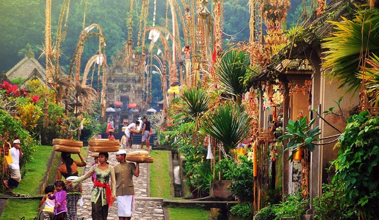Culture atau dalam bahasa Indonesia disebut budaya. Istilah budaya sudah melekat dan bahkan kerap kali hadir dalam kehidupan sehari-hari. Budaya adalah suatu cara hidup yang berkembang dan dimiliki oleh sekelompok orang. Kemudian diwariskan kepada generasi selanjutnya. Budaya itu terbentuk dari beberapa unsur yang rumit. Diantaranya yaitu adat istiadat, bahasa, karya seni, sistem agama dan politik. Bahasa sama halnya dengan budaya, yakni suatu bagian yang tak terpisahkan dari manusia. Sebagai warga Indonesia, tentu saja kita tau bahwa negara kita memiliki banyak ragam budaya dari sabang sampai marauke. Namun disini aku akan fokus dengan budaya dari tanah kelahiran ku, yaitu Bali
Sekarang siapa sih yang nggak tau Bali? pasti kita semua tau dengan pulau yang mendapat julukan "Pulau Dewata", Bali adalah salah satu provinsi Indonesia yang terkenal dengan obejek wisata budayanya, oleh karena itu disini aku bakal jelasin beberapa budaya yang orang bali lakukan, silahkan simak selanjutya dibawah ini.
1. Hari Raya Galungan dan Kuningan 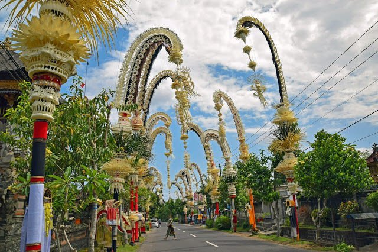
Menurut lontar Purana Bali Swipa, Hari Raya Galungan pertama kali dirayakan pada hari Purnama Kapat (Budha Kliwon Dungulan) di tahun 882 Masehi atau tahun Saka 804. Galungan dan Kuningan dirayakan sebanyak dua kali dalam setahun kalender Masehi (kalender yang kita pakai). Jarak antara Galungan dan Kuningan ialah 10 hari yang diperhitungkan berdasarkan kalender Bali.Galungan setiap hari Rabu pada wuku Dungulan. Kuningan setiap hari Sabtu pada wuku Kuningan.
Menurut lontar Purana Bali Swipa, Hari Raya Galungan pertama kali dirayakan pada hari Purnama Kapat (Budha Kliwon Dungulan) di tahun 882 Masehi atau tahun Saka 804. Galungan dan Kuningan dirayakan sebanyak dua kali dalam setahun kalender Masehi (kalender yang kita pakai). Jarak antara Galungan dan Kuningan ialah 10 hari yang diperhitungkan berdasarkan kalender Bali.Galungan setiap hari Rabu pada wuku Dungulan. Kuningan setiap hari Sabtu pada wuku Kuningan.
2. Hari Raya Nyepi 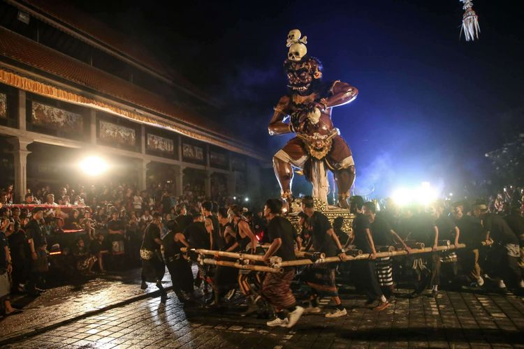
Nyepi adalah hari suci umat Hindu yang dirayakan setiap Tahun Baru Saka. Hari ini jatuh pada hitungan Tilem Kesanga (IX) yang merupakan hari penyucian dewa-dewa yang berada di pusat samudera yang membawa intisari amerta air hidup. Untuk itu umat Hindu melakukan pemujaan suci terhadap mereka. Nyepi berasal dari kata sepi (sunyi, senyap). Hari Raya Nyepi sebenarnya merupakan perayaan Tahun Baru Hindu berdasarkan penanggalan/kalender śaka, yang dimulai sejak tahun 78 Masehi. Tujuan utama Hari Raya Nyepi adalah memohon ke hadapan Tuhan Yang Maha Esa, untuk menyucikan Bhuana Alit (alam manusia/microcosmos) dan Bhuana Agung (alam semesta/macrocosmos). Sebelum Hari Raya Nyepi, terdapat beberapa rangkaian upacara yang dilakukan umat Hindu, khususnya di daerah Bali.
Tiga atau dua hari sebelum Nyepi, umat Hindu melakukan Penyucian dengan melakukan upacara Melasti atau disebut juga Melis/Mekiyis. Pada hari tersebut, segala sarana persembahyangan yang ada di Pura (tempat suci) diarak ke pantai atau danau, karena laut atau danau adalah sumber air suci (tirta amerta) dan bisa menyucikan segala leteh (kotor) di dalam diri manusia dan alam. Sehari sebelum Nyepi, yaitu pada "tilem sasih kesanga" (bulan mati yang ke-9), umat Hindu melaksanakan upacara Buta Yadnya di segala tingkatan masyarakat, mulai dari masing-masing keluarga, banjar, desa, kecamatan, dan seterusnya, dengan mengambil salah satu dari jenis-jenis caru (semacam sesajian) menurut kemampuannya. Mecaru diikuti oleh upacara pengerupukan, yaitu menyebar-nyebar nasi tawur, mengobori-obori rumah dan seluruh pekarangan, menyemburi rumah dan pekarangan dengan mesiu, serta memukul benda-benda apa saja (biasanya kentongan) hingga bersuara ramai/gaduh pengrupukan biasanya dimeriahkan dengan pawai ogoh-ogoh yang merupakan perwujudan Buta Kala yang diarak keliling lingkungan, dan kemudian dibakar. Tujuannya sama yaitu mengusir Buta Kala dari lingkungan sekitar.
3. Hari Raya Saraswati 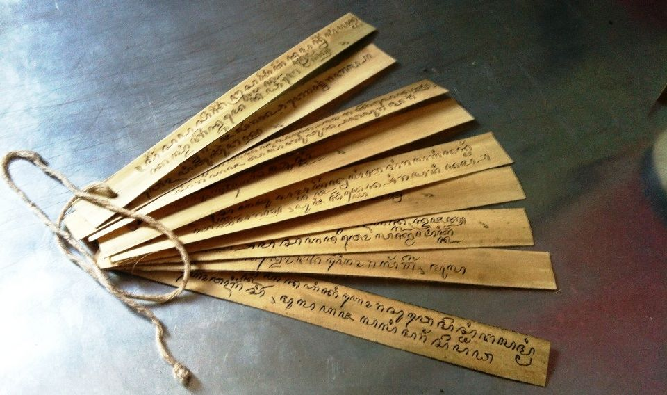
Saraswati adalah salah satu dari tiga dewi utama dalam agama Hindu, Saraswati adalah dewi yang dipuja dalam agama weda. Nama Saraswati tercantum dalam Regweda dan juga dalam sastra Purana (kumpulan ajaran dan mitologi Hindu). Ia adalah dewi ilmu pengetahuan dan seni. Saraswati juga dipuja sebagai dewi kebijaksanaan. Dewi Saraswati digambarkan sebagai sosok wanita cantik, dengan kulit halus dan bersih, merupakan perlambang bahwa ilmu pengetahuan suci akan memberikan keindahan dalam diri. Ia tampak berpakaian dengan dominasi warna putih, terkesan sopan, menunjukan bahwa pengetahuan suci akan membawa para pelajar pada kesahajaan.
Dewi Saraswati digambarkan memiliki empat lengan yang melambangkan empat aspek kepribadian manusia dalam mempelajari ilmu pengetahuan: pikiran, intelektual, waspada (mawas diri)/mulat sarira dan ego. Di masing-masing lengan tergenggam empat benda yang berbeda, yaitu:
- Lontar (buku), adalah kitab suci Weda, yang melambangkan pengetahuan universal, abadi, dan ilmu sejati.
- Genitri (tasbih, rosario), melambangkan kekuatan meditasi dan pengetahuan spiritual.
- Wina (kecapi), alat musik yang melambangkan kesempurnaan seni dan ilmu pengetahuan.
- Damaru (kendang kecil).
Angsa merupakan semacam simbol yang sangat populer yang berkaitan erat dengan Saraswati sebagai wahana (kendaraan suci). Angsa juga melambangkan penguasaan atas Wiweka (daya nalar) dan Wairagya yang sempurna, memiliki kemampuan memilah susu di antara lumpur, memilah antara yang baik dan yang buruk. Angsa berenang di air tanpa membasahi bulu-bulunya, yang memiliki makna filosofi, bahwa seseorang yang bijaksana dalam menjalani kehidupan layaknya orang biasa tanpa terbawa arus keduniawian.
Dances
Tari
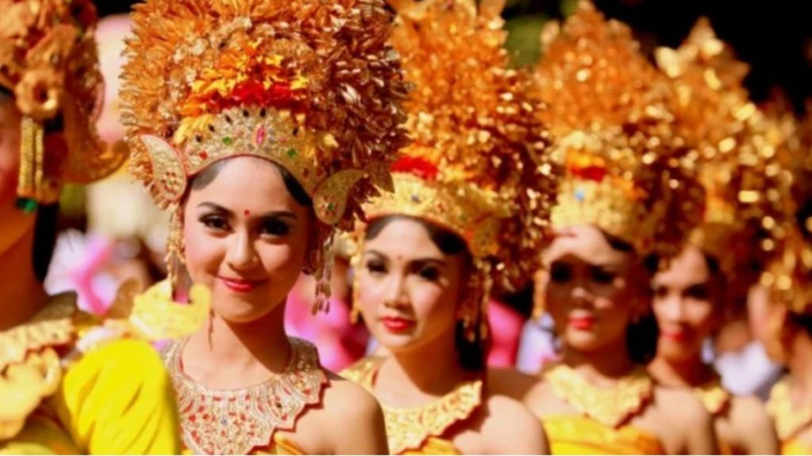Tari-tarian adalah salah satu daya tarik wisata Bali, arti dari tari sendiri adalah gerak tubuh yang ritmis sebagai ungkapan ekspresi jiwa pencipta gerak sehingga menghasilkan unsur keindahan dan makna yang mendalam. Tari menitik beratkan konsep dan koreografi yang bersifat kreatif. Selain untuk hiburan tari juga memiliki fungsi sebagai sarana dan prasarana dalam upacara keagamaan. Berikut beberapa tarian Bali yang menjadi main stream wisatawan Bali.
1. Tari Kecak 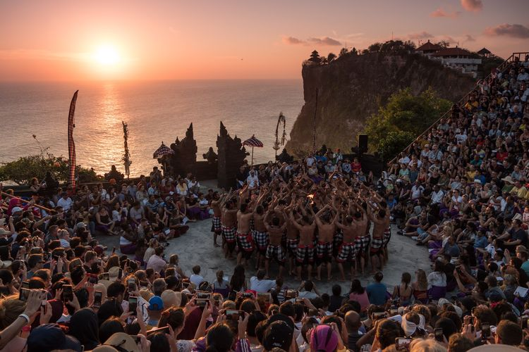
Tari Kecak adalah pertunjukan khas Bali yang menggabungkan drama dan tari. Bagi masyarakat Bali, tari Kecak memiliki makna tersendiri yang berkaitan dengan agama. Namun, tarian ini juga bisa dilakukan untuk hiburan, tidak hanya untuk upacara keagamaan saja. Tari Kecak dicetuskan oleh seorang penari Bali bernama Wayan Limbak dan pelukis Jerman bernama Walter Spies pada 1930. Keduanya menginisiasi tari Kecak dari tradisi Sanghyang serta kisah Ramayana. Dalam tradisi Sanghyang yang menjadi asal-usul Kecak, para penari biasanya menari dalam kondisi dirasuki oleh roh atau kesurupan. Wayan Limbak sendiri juga berperan mempopulerkan tarian ini ke berbagai belahan dunia bersama sanggarnya. Hingga kini, tari Kecak menjadi salah satu pertunjukan favorit yang ditonton wisatawan Bali dari seluruh dunia.
2. Tari Legong 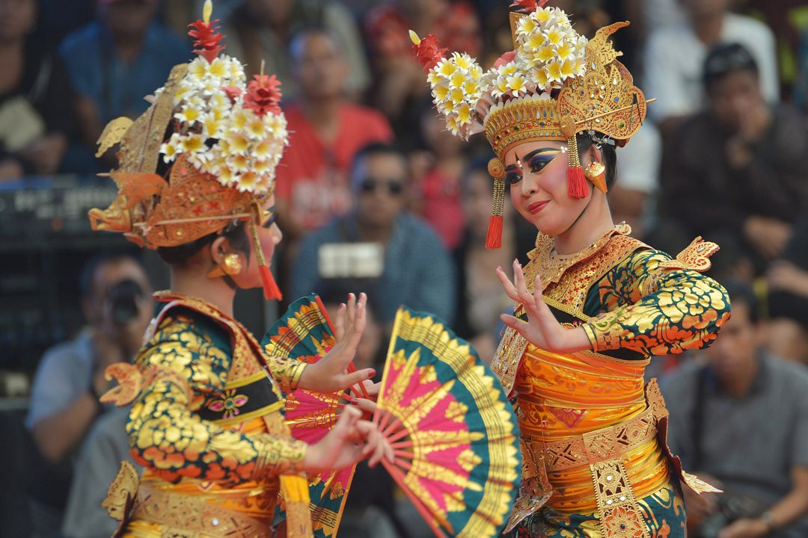
Tari Legong dalam khasanah budaya Bali termasuk ke dalam jenis tari klasik karena awal mula perkembangannya bermula dari istana kerajaan di Bali. Tarian ini dahulu hanya dapat dinikmati oleh keluarga bangsawan di lingkungan tempat tinggal mereka yaitu di dalam istana sebagai sebuah tari hiburan. Para penari yang telah didaulat menarikan tarian ini di hadapan seorang raja tentu akan merasakan suatu kesenangan yang luar biasa, karena tidak sembarang orang boleh masuk ke dalam istana.
Mengenai tentang awal mula diciptakannya tari Legong di Bali adalah melalui proses yang sangat panjang. Menurut Babad Dalem Sukawati, tari Legong tercipta berdasarkan mimpi I Dewa Agung Made Karna, Raja Sukawati yang bertahta tahun 1775-1825 M. Ketika beliau melakukan tapa di Pura Jogan Agung desa Ketewel ( wilayah Sukawati ), beliau bermimpi melihat bidadari sedang menari di surga. Mereka menari dengan menggunakan hiasan kepala yang terbuat dari emas.
3. Tari Pendet 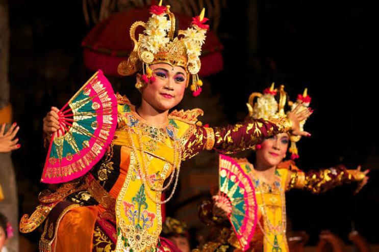
Awal mula tarian ini muncul adalah sebagai tarian sembahan yang dilakukan ketika sembahyang di pura-pura. Tarian ini ditujukan sebagai bentuk ucapan selamat datang atas turunnya dewa di Bumi. Tari pendet adalah hasil dari gubahan maestro seni tari dari Bali yang bernama I Wayan Rindi. Gerakan tari pendet diambil dari pakem-pakem gerakan tari pendet dewa atau tari pendet asli yang dilakukan untuk persembahan. Tanpa menghilangkan nilai religi, sakral, dan keindahan tari ini, I Wayan beserta temannya bernama Ni Ketut Reneng berhasil memasukkan suatu unsur tarian pendet dewa ke dalam tari pendet yang populer hingga saat ini.
4. Tari Barong 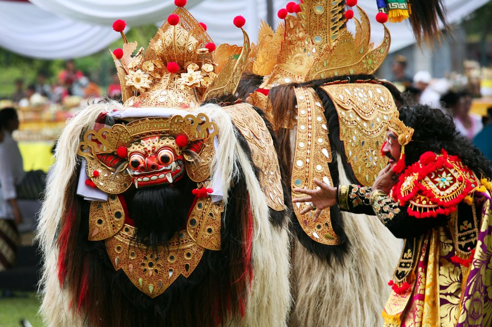
Tari Barong adalah sebuah tarian pertunjukan yang memiliki makna unsur-unsur kepercayaan di dalamnya. Tari Barong ini menceritakan tentang mitologis gambaran binatang beruang yang memiliki kekuatan gaib dan dianggap dapat melindungi manusia. Tari Barong merupakan peninggalan kebudayaan pra-Hindu yang melambangkan pertempuran antara kebaikan (dharma) dan keburukan (adharma).
Menurut keyakinan masyarakat Bali, khususnya yang beragama Hindu, kebaikan dan keburukan selalu berdampingan atau disebut juga sebagai Rwa Bhineda. Kata Barong berasal dari kata bahruang yang berarti beruang. Tari Barong menceritakan tentang pertarungan antara Barong dan Rangda, juga dilengkapi dengan tokoh-tokoh lainnya, seperti kera (sahabat Barong), Dewi Kunti, Sadewa (anak Dewi Kunti) serta para pengikut Rangda. Dalam tarian ini, Barong melambangkan kebaikan dimana penari menggunakan kostum binatang berkaki empat dan keburukan yang dilambangkan dengan Rangda, yaitu sosok menyeramkan dengan dua taring runcing mulutnya.
5. Tari Baris 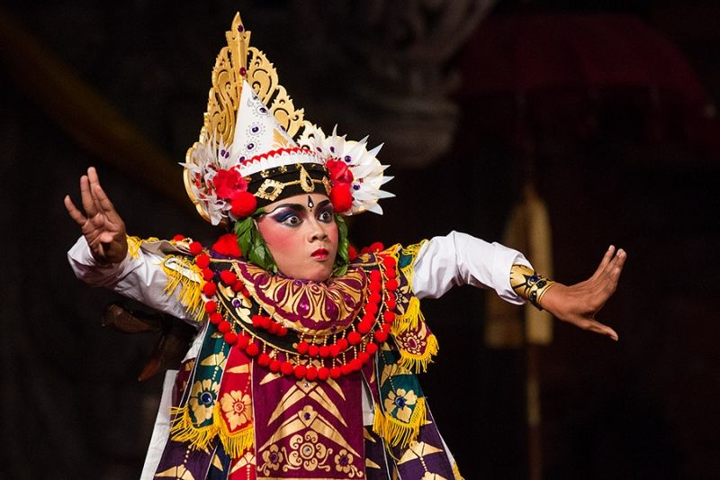
Tari Baris adalah sebuah jenis tari-tarian perang tradisional dari Bali yang diiringi dengan gamelan. Tari ini menggambarkan perasaan seorang pahlawan muda sebelum ia pergi ke medan perang, mengelu-elukan kejantanan pahlawan Bali dan menunjukkan kemantapan kepemimpinannya.[1] Dalam bahasa Bali arti baris mirip seperti dalam bahasa Indonesia, yaitu leret atau baris[1] dan khususnya barisan prajurit yang berbakti kepada para raja.
Temples
Pura
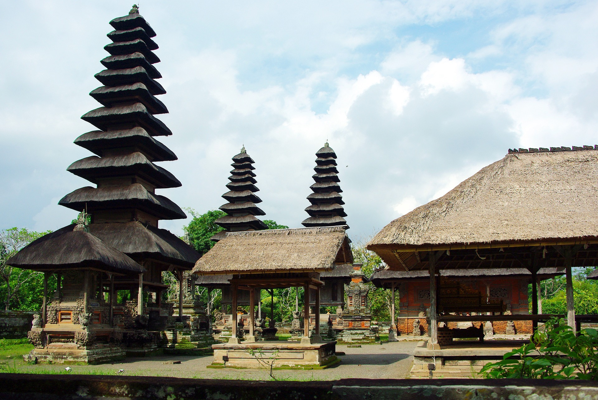Pura adalah tempat ibadah dari masyarakat yang memeluk agama Hindu dari seluruh Indonesia, Bali adalah tempat terkonsentrasinya pura dan umat agama Hindu. Kata "Pura" sesungguhnya berasal dari akhiran bahasa Sanskerta (-pur, -puri, -pura, -puram, -pore), yang artinya adalah gerbang, misal, angkasapura berarti Gerbang angkasa. Dalam perkembangan pemakaiannya di Pulau Bali, istilah "Pura" menjadi khusus untuk tempat ibadah; sedangkan istilah "Puri" menjadi khusus untuk tempat tinggal para raja dan bangsawan. Berikut beberapa pura Bali yang terkenal.
1. Pura Besakih
Pura Besakih adalah sebuah komplek pura yang terletak di Desa Besakih, Kecamatan Rendang, Kabupaten Karangasem. Letak Pura Besakih sengaja dipilih di desa yang dianggap suci karena letaknya yang tinggi, yang disebut Hulundang Basukih yang kemudian menjadi Desa Besakih. Nama Besakih diambil dari Bahasa Sanksekerta, wasuki atau dalam bahasa Jawa Kuno basuki yang berarti selamat. Nama Pura Besakih didasari pula oleh mithologi Naga Basuki sebagai penyeimbang Gunung Mandara. Komplek Pura Besakih terdiri dari 1 Pura Pusat (Pura Penataran Agung Besakih) dan 18 Pura Pendamping (1 Pura Basukian dan 17 Pura Lainnya).
Pura Besakih di bangun tahun 1284 oleh Rsi Markandeya yang merupakan seorang pemuka agama Hindu keturunan India. Rsi Markandeya membangun Pura Besakih karena mendengar suara gaib ketika bermeditasi di Dataran Tinggi Dieng. Ia dan pengikutnya pun sampai membelah hutan di Jawa untuk sampai ke pulau Bali.
2. Pura Ulun Danu Baratan

Pura Ulun Danu Beratan terletak di Desa Candikuning, Kecamatan Baturiti, Kabupaten Tabanan. Sekitar 50 KM di utara kota Denpasar, di jalan utama Bedugul-Singaraja. Pura Ulun Danu Baratan adalah salah satu pura terindah yang ada di Bali dikarenakan letaknya yang berada pada Danau Baratan.
Sejarah pendirian Pura Ulun Danu Beratan tercantum dalam kisah yang terdapat dalam Lontar Babad Mengwi. Disebutkan dalam lontar tersebut bahwa pendiri Pura tersebut adalah I Gusti Agung Putu. Didirikan pada tahun saka 1556 (Tahun 1634 Masehi) dan dipelihara oleh empat “satakan” dari desa-desa di sekitar area Pura ini, yang terdiri dari: satakan Candi Kuning mewilayahi 5 bendesa adat, satakan Bangah mewilayahi 3 bendesa adat, satakan Antapan mewilayahi 4 bendesa adat, dan satakan Baturiti mewilayahi 6 bendesa adat.
3. Pura Tanah Lot

Pura Tanah Lot adalah salah satu Pura (Tempat Ibadah Umat Hindu) yang sangat disucikan di Bali, Indonesia. Di sini ada dua pura yang terletak di atas batu besar. Satu terletak di atas bongkahan batu dan satunya terletak di atas tebing. Pura Tanah Lot ini merupakan bagian dari pura Dang Kahyangan. Pura Tanah Lot merupakan pura laut tempat pemujaan dewa-dewa penjaga laut. Pura Tanah Lot terletak di Desa Beraban, Kecamatan Kediri, Kabupaten Tabanan, sekitar 13 kilometer di sebelah selatan Kota Tabanan. Sejarah Pura Tanah Lot Bali Indonesia berdasarkan legenda, dikisahkan pada abad ke -15, Bhagawan Dang Hyang Nirartha atau dikenal dengan nama Dang Hyang Dwijendra melakukan misi penyebaran agama Hindu dari pulau Jawa ke pulau Bali.
Pura Tanah Lot adalah salah satu Pura (Tempat Ibadah Umat Hindu) yang sangat disucikan di Bali, Indonesia. Di sini ada dua pura yang terletak di atas batu besar. Satu terletak di atas bongkahan batu dan satunya terletak di atas tebing. Pura Tanah Lot ini merupakan bagian dari pura Dang Kahyangan. Pura Tanah Lot merupakan pura laut tempat pemujaan dewa-dewa penjaga laut. Pura Tanah Lot terletak di Desa Beraban, Kecamatan Kediri, Kabupaten Tabanan, sekitar 13 kilometer di sebelah selatan Kota Tabanan.